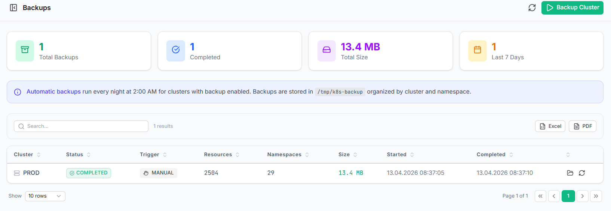

DOCUMENTATION HUB V7.0
DOKÜMANTASYON MERKEZİ V7.0
Forensic Backup
Adli Yedekleme
Poyraz-K8s executes an automated, highly-paranoid backup strategy. It retrieves 30+ K8s manifest types, sanitizes them iteratively, and stores them precisely within a time-stamped taxonomy for instant disaster recovery or forensic review.
Poyraz-K8s otomatik, son derece paranoyak bir yedekleme stratejisi yürütür. 30'dan fazla K8s manifest türünü alır, yinelemeli olarak temizler ve anında felaket kurtarma veya adli inceleme için zaman damgalı bir taksonomi içinde hassas bir şekilde saklar.

| Feature | Özellik | Detail Specification | Detay Spesifikasyonu |
|---|---|---|---|
| CRITICAL CoverageKapsama | DaemonSets, Deployments, CronJobs, Secrets (Opaque), IngressClasses, PriorityClasses, CRDs.DaemonSet'ler, Deployment'lar, CronJob'lar, Secret'lar, IngressClass'lar, PriorityClass'lar, CRD'ler. | ||
| ENGINE SanitationTemizleme | Automated stripping of uid, resourceVersion, and managedFields for pure source-of-truth export.Saf bir doğruluk kaynağı dışa aktarımı için uid, resourceVersion ve managedFields'in otomatik olarak soyulması. |
||
| OPS StorageDepolama | /k8s-backup/{cluster_name}/{YYYY-MM-DD_HH-MM}/{namespace}/{kind}.yaml |